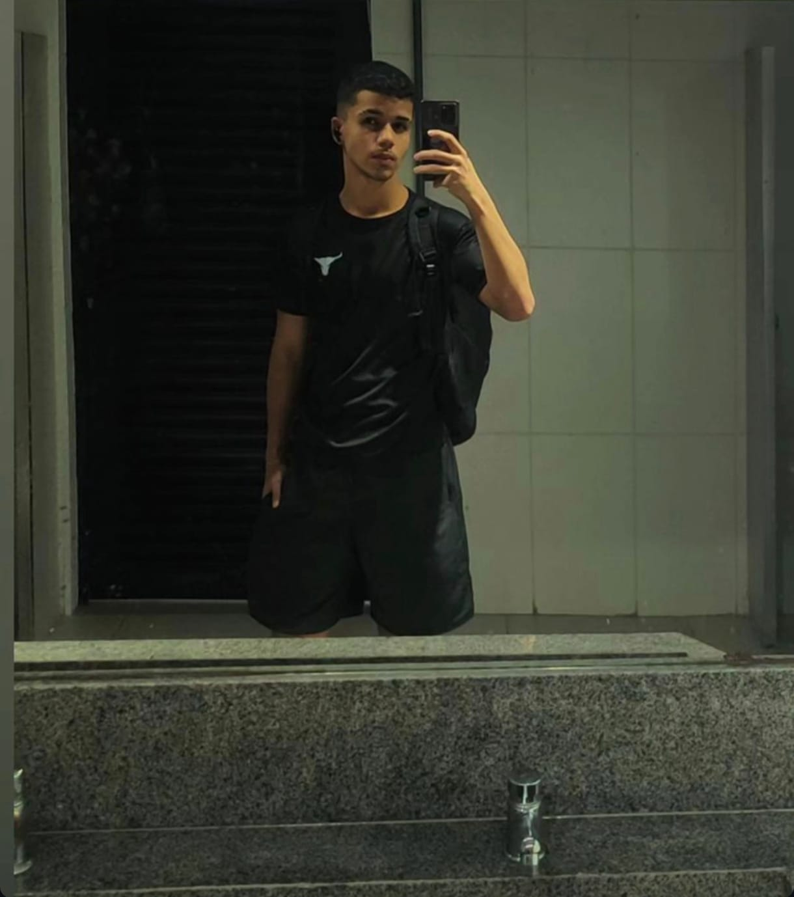
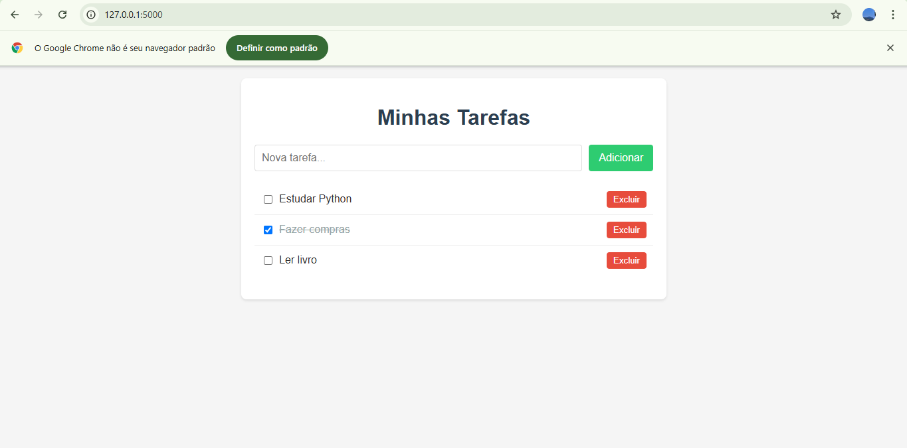
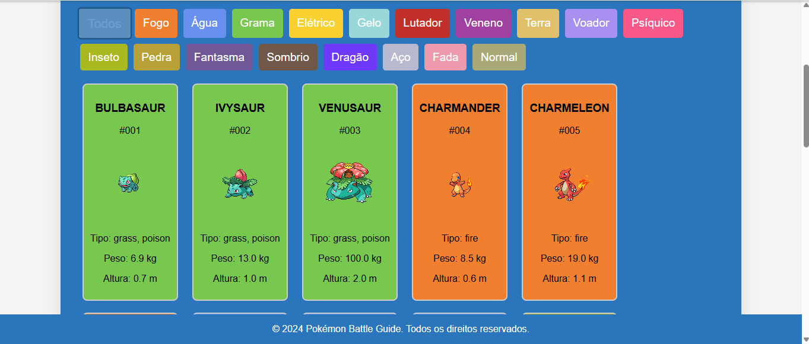

Guilherme Caetano de Souza — Desenvolvedor em Formação | 17 anos Sou estudante da ETEC na área de Informática para Internet, com foco em desenvolvimento web e backend. Aos 17 anos, já conclui cursos de programação em Java e Node.js, além de ser formado no curso de inglês do CNA. Tenho experiência com as linguagens como: HTML, CSS, JavaScript, Python e Node.js. Sou dedicado, autodidata e determinado a encontrar soluções eficazes para qualquer desafio. Quando enfrento um problema, pesquiso, estudo e aplico o que for necessário até resolvê-lo com qualidade. Estou sempre buscando evolução constante, tanto técnica quanto profissionalmente. Se você procura alguém comprometido, com boa base técnica e vontade de entregar sempre o melhor, estou pronto para ajudar no seu projeto!
Sobre Mim

O Que Eu Sei
Front-end
HTML, CSS, JavaScript, React
Back-end
Node.js, Python, PHP
Banco de Dados
MySQL
Meus Projetos

Gerenciador de Tarefas

Pokedex
Certificações
Busco
Minha primeira oportunidade profissional na área de TI através de um estágio desafiador, onde eu possa:
- Aplicar meus conhecimentos técnicos em projetos reais
- Descobrir minha vocação dentro da area
- Desenvolver habilidades práticas
- Aprender com profissionais experientes
Tenho especial interesse em:
- Explorar a area da ciência de dados e análise de informações
- Participar de projetos
- Crescer junto com a empresa, agregando valor enquanto me desenvolvo
Meu foco é encontrar uma organização que valorize o aprendizado contínuo e me permita equilibrar meus estudos na ETEC com experiência profissional significativa.